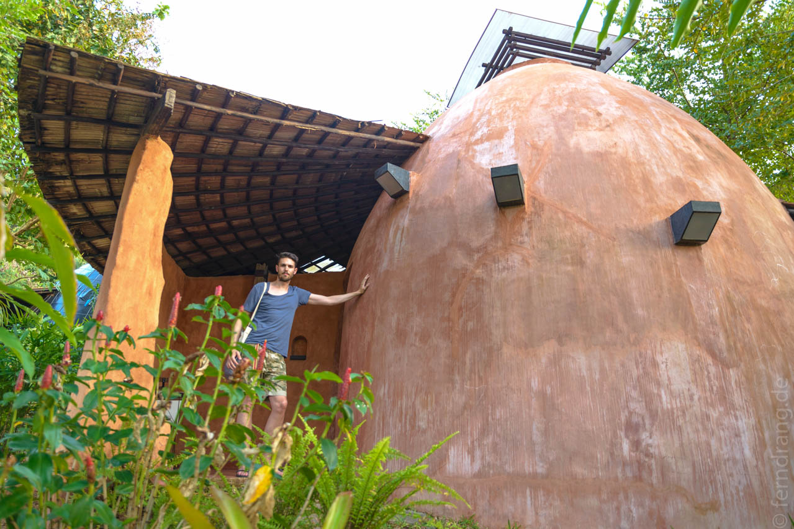
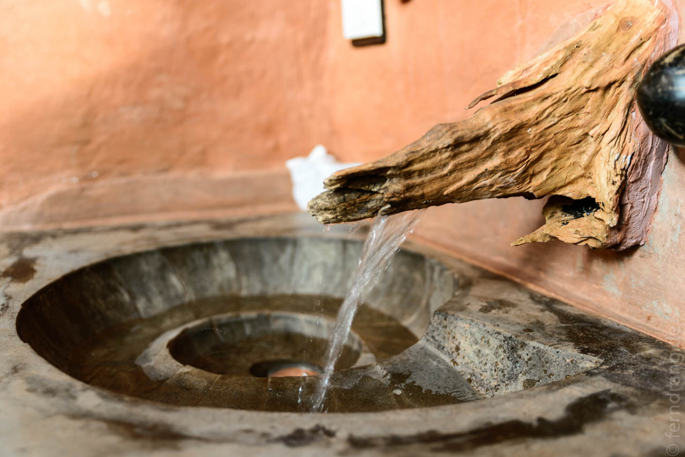
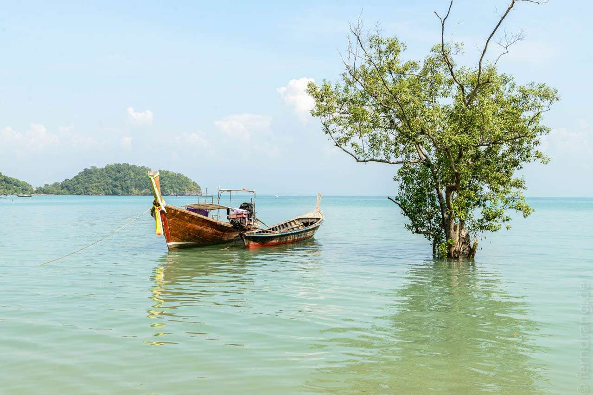

02. Januar 2014
Ao Nang
Durch die verschlafenen Straßen Yangons sind wir zum Flughafen gefahren. Hier wirkt es schon deutlich moderner als in Mandalay. Erster Stopp Bangkok, zweiter Stopp Phuket, dann mit dem Taxi nach Krabi und kurz vorher nach Ao Nang abgebogen.
Was wir nicht wussten ist, dass Ao Nang eine Touristenhölle geworden ist. Die Beschreibungen der langen Strände, pittoresk eingerahmt von steilen Felsen, sind hinfällig, wenn sich zigtausend Proleten darauf tummeln. Der Ort könnte mit seinem Starbucks, Burger King und McDonalds überall auf der Welt sein – nur eigentlich nicht in Thailand.
Dafür haben wir aber die beste Unterkunft des Orts erwischt, für die wir werben müssen: Das "Baan Dinlamun Resort" besteht aus einer kleinen Sammlung vom Besitzer selbst gebauter Eier aus Lehmziegeln. Mit viel Geschmack hat er darin luxuriöse Zimmer mit offenem Außenbad eingerichtet. Die Regale und Lampen sind direkt ins Ei eingebaut. Das Hauptei ist größer und sieht mit seinem Dach wie ein UFO aus. Das Frühstück wird auf der kleinen Terrasse serviert. Im Moment gibt es nur zwei fertige Eier, drei werden noch ausgebrütet. Etwas abseits der Straße bekommt man hier vom Lärm der Autos und Menschen nichts mit. Perfekt!
 Einen Strand weiter Richtung Norden geht es schon ruhiger zu. Nach einem Spaziergang entlang der Uferstraße, wo einheimische Fressbuden einen mit Pancakes und frittierten Insekten versorgen, findet man ein Fleckchen Strand ohne auf Tuchfühlung gehen zu müssen.
Der Ausflug mit dem Boot-Taxi auf die Railey-Halbinsel nebenan war auch etwas schwierig. Hier sind die Strände zwar noch malerischer und die Felsen liegen wie in der Halong-Bucht im Wasser. Aber es ist derart viel los, dass es sich nicht lange aushalten lässt. Das einzig originelle sind die Imbiss-Boote: Findige Leute haben sich komplette Küchen auf ihren Longtail-Booten eingerichtet und machen am Strand halt, wo die Touristen bis zur Hüfte im Wasser stehen und auf die frisch zubereiteten Bestellungen warten.
Man kann über einen kleinen Hügel zum Ton Si Beach kraxeln. Hier ist sehr viel weniger los und die Bucht gehört noch größtenteils den Backpackern und Kletterern. Letztere finden hier anspruchsvolle Routen in den fiesen überhängen und Flanken der Felsen. Bei der irren Hitze ist das wohl doppelt so anstrengend.